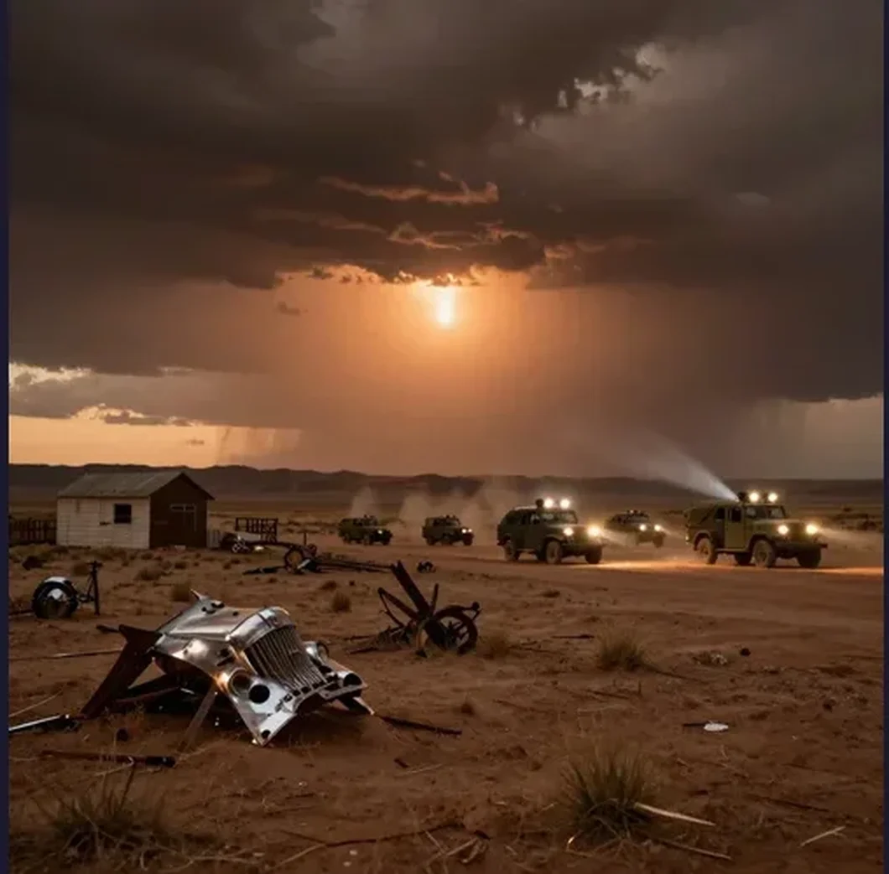

Roswell UFO Incident: The 1947 Crash That Launched a Thousand Conspiracy Theories

On July 8, 1947, the Roswell Army Air Field in New Mexico issued a press release that would echo through American culture for the next eight decades. The headline was explosive: “RAAF Captures Flying Saucer on Ranch in Roswell Region.” The story, picked up by the Associated Press and broadcast across the country, reported that the military had recovered a “flying disc” from a ranch near Roswell. For a few dizzying hours, it seemed as though humanity might finally have proof that we were not alone in the universe. Then, just as quickly, the story changed. The next day, the military issued a retraction: the “flying disc” was merely a weather balloon. The debris, officials explained, consisted of rubber, tin foil, balsa wood sticks, and heavy paper — mundane materials carried by a standard meteorological device. The story faded from the front pages, and for thirty years, almost nobody thought about Roswell at all.
But Roswell refused to stay buried. In the late 1970s, a nuclear physicist named Stanton Friedman began interviewing elderly witnesses who told a very different story — one involving not a weather balloon but a crashed spacecraft, not foil and sticks but otherworldly metals, and not just debris but alien bodies. The revival of the Roswell story launched the modern UFO conspiracy movement, transformed a sleepy New Mexico town into a pop-culture pilgrimage site, and created one of the most enduring mysteries of the twentieth century.
To understand Roswell, you have to understand the moment in which it occurred. The summer of 1947 was the birth of the flying saucer era. On June 24, 1947, a private pilot named Kenneth Arnold was flying over the Cascade Mountains in Washington State when he observed nine crescent-shaped objects flying in formation at an estimated speed of 1,900 km/h — far faster than any known aircraft of the time. Arnold described their movement as being “like a saucer would if you skipped it over water,” and the media seized on the phrase, coining the term “flying saucer.” Within weeks, hundreds of UFO sightings were reported across the United States. The country was gripped by saucer hysteria.
It was in this atmosphere that W.W. “Mac” Brazel, a foreman at the Foster Ranch about 75 miles northwest of Roswell, discovered unusual debris scattered across a pasture in early July 1947. Brazel later described finding rubber strips, tin foil, heavy paper, balsa wood sticks, and some type of tape with floral designs. He collected the materials, stored them in a shed, and eventually mentioned the find to the local sheriff, who contacted the Roswell Army Air Field (RAAF), home to the world’s only nuclear-armed bomber wing, the 509th Bomb Group. On July 8, Major Jesse Marcel Sr., the 509th’s intelligence officer, was dispatched to the ranch to investigate. Marcel collected debris and brought some of it back to the base, stopping at his home along the way to show his wife and son the strange materials. That same day, RAAF public information officer Walter Haut issued the now-legendary press release. Within 24 hours, the military had reversed course. Brigadier General Roger Ramey held a press conference at Fort Worth Army Air Field in Texas, where he displayed debris from what he identified as a rawinsonde weather balloon with a radar reflector kite. The story was declared a mistake. The press moved on.
For decades, the “weather balloon” explanation was accepted, if grudgingly. Then, in the early 1990s, pressure from Congress and the public led the United States Air Force to conduct a formal investigation. The result was the 1994 report “The Roswell Report: Fact vs. Fiction in the New Mexico Desert,” which concluded that the debris recovered in 1947 came not from a weather balloon but from a highly classified military project called Project Mogul. Project Mogul was a top-secret Cold War program designed to detect Soviet nuclear weapons tests using arrays of high-altitude balloons equipped with low-frequency acoustic microphones. The microphones were designed to pick up the sound waves generated by nuclear explosions, which could travel vast distances through the atmosphere. The balloon trains used in Project Mogul were made of neoprene rubber, aluminum foil reflectors, balsa wood frames, and other materials — matching almost exactly the debris described by Mac Brazel and photographed in General Ramey’s office.
The crucial detail was the classification: Project Mogul was so secret that the military could not acknowledge its existence in 1947. The “weather balloon” story was not technically accurate but was the closest unclassified description available. The Air Force report concluded that Brazel had found debris from a Mogul balloon train (Flight 4) launched from Alamogordo, New Mexico, in early June 1947 and never recovered.
The “alien bodies” element of the Roswell story did not appear until decades after the original incident. It was introduced primarily by Glenn Dennis, a former mortician in Roswell, who claimed in the late 1980s that in July 1947 he had received calls from the RAAF base asking about small, hermetically sealed caskets and had seen strange, small bodies in the base infirmary. In 1997, the Air Force published a follow-up report, “The Roswell Report: Case Closed,” which concluded that witnesses who described seeing small, humanoid bodies were likely recalling events from the 1950s, when the Air Force conducted high-altitude parachute tests using anthropomorphic crash test dummies. These dummies, about the size of adult humans but appearing smaller when described from memory decades later, were dropped from balloons at high altitudes and recovered in the desert by military personnel wearing field uniforms that witnesses might have misremembered as “medical” or “decontamination” suits.
Jesse Marcel Sr. did not speak publicly about the Roswell incident for over three decades. But in 1978, he was interviewed by nuclear physicist Stanton Friedman and later appeared in a 1979 documentary. Marcel stated that the debris he collected was “not of this world” and that the material displayed in General Ramey’s office was not the same material he had retrieved from the Foster Ranch. He described a metallic foil that could be crumpled and would return to its original shape, and small beams with strange symbols resembling hieroglyphics. Marcel’s testimony, delivered by a credible military intelligence officer with a distinguished record, became the foundation of the Roswell conspiracy theory. Critics point out that Marcel gave inconsistent accounts over the years and that memory distortion over three decades is well-documented by psychologists. Supporters argue that a man of Marcel’s training and experience would not have mistaken balsa wood and aluminum foil for something extraordinary.
For thirty years, Roswell was a non-story. The transformation from forgotten incident to cultural phenomenon began in 1978, when Stanton Friedman tracked down Jesse Marcel Sr. and conducted a series of interviews. Friedman’s research led to the publication of “The Roswell Incident” in 1980, co-authored by Charles Berlitz and William Moore. The book was a bestseller and introduced the full Roswell narrative to a mass audience: crashed spacecraft, alien bodies, government cover-up, and military intimidation of witnesses. Over the following decades, dozens of witnesses came forward with increasingly dramatic claims. Some described seeing alien spacecraft. Others described multiple crash sites. Still others described live aliens being recovered and transported to Wright-Patterson Air Force Base in Ohio. The result was a self-reinforcing mythology. Each new witness, each new book, each new documentary added a layer to the story that became harder and harder to separate from the original, relatively simple facts of the case.
The International UFO Museum and Research Center opened in Roswell in 1991 and has since become one of the most popular tourist attractions in New Mexico, drawing over 200,000 visitors annually to a town of roughly 50,000 people. Roswell has fully embraced its alien identity: streetlights are shaped like alien heads, the local McDonald’s is built in the shape of a flying saucer, and the annual Roswell UFO Festival each July draws thousands of visitors from around the world. What began as a brief military press release has become an entire town’s economic identity.
Roswell is not a single mystery. It is a palimpsest — layer upon layer of memory, testimony, speculation, and mythology built on top of a brief incident in July 1947 when a rancher found some debris and a military base issued a confused press release. The Project Mogul explanation accounts for the physical evidence remarkably well: the materials match, the timeline fits, and the secrecy surrounding the program explains why the military behaved so strangely. But the government’s history of dishonesty on other matters has created a deep reservoir of distrust that no official report can fully drain. The extraterrestrial hypothesis requires believing that a crashed spacecraft was recovered, alien bodies were concealed, and the truth has been maintained by a conspiracy involving thousands of people across multiple government agencies for nearly eighty years. That is an extraordinary claim requiring extraordinary evidence. The evidence, so far, consists of elderly witness testimony, anecdotal accounts, and documents of dubious authenticity. And yet the story endures, because it speaks to something deeper than evidence: the hope — or the fear — that we are not alone.
References & Further Reading
Britannica: Roswell Incident — Summary of the crash, military response, and cultural impact
U.S. Air Force: The Roswell Report — Official military report on the 1947 incident
Wikipedia: Kenneth Arnold — The pilot whose 1947 sighting launched the “flying saucer” era
Wikipedia: Stanton T. Friedman — The nuclear physicist who revived the Roswell story in 1978
📚 Recommended Reading: IN LEAGUE WITH A UFO: THE ROSWELL INCIDENT by Lou Baldin (on Amazon) — As an Amazon Associate, we earn from qualifying purchases.
Editorial note: reconstructions are continuously revised as new witness testimony and declassified documents emerge. See our Editorial Policy.